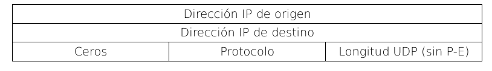

Capa de Transporte.
Esta capa se encarga de la transferencia libre de errores de los datos entre el emisor y el receptor, aunque no estén directamente conectados, así como de mantener el flujo de la red. La tarea de esta capa es proporcionar un transporte de datos confiable y económico de la máquina de origen a la máquina destino.Protocolo de datagrama de usuario (UDP)
En la capa de red, una dirección destino identifica un antifitrión; no se hace ninguna otra distinción con respecto a qué usuario o qué programa de aplicación recibirá el datagrama. Ahora ampliaremos el grupo de protocolos TCP/IP al agregar un mecanismoque distingue entre muchos destinos dentro de un anfitrión, permitiendo que varios programas que se ejecutan en él puedan enviar y recibir datagramas en forma independiente. Ahora en vez de pensar el proceso como un destino final, imaginaremos que cada máquina contiene un grupo de puntos abstractos de destino que llamaremos puertos de protocolo. Cada uno de ellos se identifica por medio de un número entero positivo. Entonces para comunicarnos con algún puerto externo necesitaremos saber la dirección IP del anfitrión y además el número de puerto de protocolo destino. Muchos programas de aplicación que utilizan UDP trabajan bien en un ambiente local pero fallan drásticamente cuando se utilizan en una red de redes más grande.Formato de los mensajes UDP
Cada mensaje UDP se conoce como datagrama de usuario: La cabecera está formada por cuatro campos de 16 bits cada uno. ·Puerto UDP origen
: contiene el número de puerto del protocolo origen. Este es opcional, y cuando se utiliza, especifica la parte a la que se deben enviar las respuestas de lo contrario puede valer cero. ·Puerto UDP destino
: contiene el número de puerto del protocolo destino. ·Longitud
: contiene un conteo de los octetos en el datagrama UDP. Incluyendo el encabezado y los datos. Por lo tanto el mínumo valor será 8 (longitud del encabezado). ·Suma de verificación
: es opcional y no es necesario utilizarla. Un valor cero significa que la suma no se computó. Pero es la única forma de garantizar que los datos lleguen intactos a destino.Pseudo-encabezado UDP
Para computar la suma de verificación, el UDP añade unpseudo-encabezado
al datagrama y alcanzar una longitud múltiplo de 16 bits y computa la suma de verificación sobre todo el conjunto. El octeto de relleno y el pseudo-encabezado no se transmiten con datagrama UDP, ni se suman en su longitud.El propósito del uso del pseudo-encabezado es para verificar la correcta llegada del datagrama UDP a destino.
El encabezado UDP sólo especifica el puerto protocolo destino. Por lo tanto el UDP de la máquina transmisora computa la suma de verificación que cubre tanto la dirección IP del destino como el datagrama UDP.Luego en el destino final el software UDP revisa la suma de verificación utilizando la IP destino obtenida del encabezado del datagrama IP que transportó el mensaje UDP
. Si la suma concuerda, debe ser verdad que el datagrama llegó al anfitrión deseado y al puerto correcto. Encapsulación de UDP y estratificación por capas de protocolos
Estratificar por capas el UDP por encima del IP significa que un mensaje UDP completo incluyendo el encabezado y los datos, se encapsula en un datagrama IP mientras viaja a través de una red de redes. La capa IP sólo es responsable de transferir datos entre par de anfitriones, mientras que la capa UDP solamente es responsable de diferenciar entre varias fuentes o destinos en un anfitrión.Servicio de transporte de flujo confiable(TCP)
Utilizar un sistema de entrega sin conexión y no confiable para transferencias de gran volumen puede resultar tedioso o molesto y requiere que los programadores incorporen en cada programa de aplicación la detección y correción de errores. Debido a que es difícil diseñar, entender o modificar el software que proporciona confiabilidad, se ha encontrado una solución en un protocolo para proporcionar una entrega de flujo confiable.Características del servicio de entrega confiable
·Orientación de flujo
: cuando dos programas de aplicación se transfieren datos, pensamos a los mismos como un flujo de bits, dividos en octetos de 8 bits o en bytes. ·Conexión de circuito virtual
: antes de comenzar la transferencia, los programas de aplicación, transmisor y receptor interactúan con sus respectivos sistemas operativos informándoles la necesidad de realizar una transferencia de flujo. Los módulos de software interactúan mandándose mensajes por la red de redes, verificando que la transferenciaa esté autorizada y estableciendo una conexión. Si por cualquier motivo la transferencia falla, ambas máquinas lo sabrán y reportaran los problemas a los programas apropiados para cada aplicación. ·Transferencia con memoria intermedia
: para hacer eficiente la transferencia y minimizar el tráfico de red, las implementaciones recolectan datos suficientes para llenar un datagrama razonablemente largo antes de transmitirlo (llenar la memoria intermedia). Lo mismo ocurre si la aplicación genera bloques muy grandes de información, éstos se dividen antes de ser enviados. Para aplicaciones en las que los datos se deben enviar aunque no se llene la memoria intermedia, el servicio de flujo proporciona un mecansimo llamado push que las aplicaciones utilizan para forzar una transferencia. ·Flujo no estructurado
: no es necesario que el flujo sea estructurado, los programas de aplicación de servicio de flujo deben entender el contenido del flujo y ponerse de acuerdo sobre su formato antes de iniciar la conexión. ·Conexión full duplex
: este tipo de conexión permite la transferencia concurrente en ambas direcciones. Son dos flujos independientes que se mueven en direcciones opuestas, sin ninguna interacción aparente.Proporcionando confiabilidad
Los protocolos que aseguran la entrega de datos enviados, utilizan una técnica fundamental llamadaacuse de recibo positivo con retransmisión
. Ésta requiere que el receptor se comunique con el origen y le envíe un mensaje de acuse de recibo(ACK)
conforme recibe los datos. El transmisor guarda un registro de cada paquete que envía y espera un acuse de recibo antes de enviar el próximo paquete. El transmisor también arranca un temporizador al enviar el paquete y si este expira antes de la llegada del acuse retransmite. Para la detección de paquetes duplicados, los protocolos confiables los distinguen porque asignan a cada paquete unnúmero de secuencia y obligan al receptor a recordar que número de secuencia recibe
. Para la detección de mensajes de acuse de recibo duplicados, los protocolos de acuses de recibo envían los números de secuencia dentro de los acuses para que el receptor pueda asociar correctamente acuses con paquetes.Ventana deslizable
El concepto de ventana deslizable sirve de base para la transmisión de flujo. Hace que ésta sea más eficiente.Un protocolo simple de acuses de recibo positivos ocupa una gran cantidad de ancho de banda de red debido a que debe retrasar el envío del siguiente paquete hasta que llegue el acuse de recibo del paquete anterior
.
El protocolo coloca una ventana pequeña y de tamaño fijo en la secuencia y transmite todos los paquetes que residan dentro de la ventana. Una vez que el transmisor recibe un acuse de recibo para el primer paquete de la ventana, la mueve y envía el siguiente paquete
. Con un tamaño de ventana igual a 1 estaremos en el mismo protocolo de acuse de recibo simple. Al aumentar el tamaño de la ventana disminuimos cada vez más el tiempo ocioso de la red. Una ventana divide la secuencia de paquetes en tres partes: los de laizquierda
de la ventana ya se transmitieron, recibieron y acusaron exitosamente; los delmedio
los paquetes de la ventana están en proceso de transmisión; los de laderecha
todavía no se han transmitido. El protocolo de ventana deslizable siempre recuerda que paquetes tienen acuse de recibo y mantiene un temporizador separado para cada paquete sin acuse de recibo.Si se pierde un paquete el temporizador concluye y el transmisor reenvía el paquete.
Protocolo de control de transmisión
TCP es un protocolo de comunicación, no una pieza de software. La diferencia entre estos dos es análoga a la diferencia entre un lenguaje de programación y un compilador.Tareas que cumple el protocolo TCP
:· Especifica el formato de datos y los acuses de recibo que intercambian dos computadoras para lograr una transferencia confiable. · Especifica los procedimientos que una computadora utiliza para asegurarse de que los datos lleguen de manera correcta. · Especifica cómo el software TCP distingue el correcto entre muchos destinos en una misma máquina. · Especifica cómo las máquinas en comunicación resuelven errores como la pérdida o duplicación de paquetes. · Especifica cómo dos computadoras inician una transferencia de flujo TCP y cómo se ponen de acuerdo cuando se completa. ·No especifica los procedimientos que usan los programas de aplicación para acceder a las operaciones que realiza TCP. Esto es para darle mayor flexibilidad al implementador
.Puertos, conexiones y puntos extremos
Al igual que UDP, TCP reside sobre el IP en el esquema de estratificación por capas de protocolos. TCP permite que varios programas de aplicación en una máquina se comuniquen de manera concurrente y realiza el demultiplexado del tráfico TCP entrante entre los programas de aplicación. También TCP utiliza números de puerto de protocolo para identificar el destino final dentro de una máquina. TCP utiliza la conexión, no el puerto de protocolo, como su abstracción fundamental; las conexiones se identifican por medio de un par de puntos extremos. TCP define como punto extremo a un par de números enteros (anfitrión, puerto) en donde el anfitrión es la dirección IP de un afitrión y puerto es un puerto TCP en dicho anfitrión por ejemplo (18.26.0.32,1069) y (128.10.2.3,25) mientras que a la vez puede existir la conexiónEsto es posible porque no hay ambiguedad ya que TCP asocia los mensajes entrantes a una conexión en vez de hacerlo con un puerto de protocolo.
Aperturas pasivas y activas
Como TCP es un servicio orientado a la conexión, requiere que ambos puntos extremos estén de acuerdo con la comunicación. Para hacerlo, el programa de aplicación een un extremo realiza una función de apertura pasiva al contactar su sistema operativo e indicar que acatará una conexión entrante, en esee momento el SO asigna un número de puerto TCP a su extremo de la conexión. Por otro lado, el programa de aplicación en el otro extremo debe contacta a su SO mediante una solicitud de apertura activa para establecer la conexión.Segmentos, flujos y números de secuencia
TCP utiliza un mecanismo de ventana deslizable un poco mejorado para la transmisión eficiente y el control de flujo. Permite que el receptor restrinja la transmisión hasta que tenga espacio suficiente en la memoria intermedia para incorporar datos. De esta manera puede controlar el flujo extremo a extremo. El mecanismo TCP de ventana deslizable opera a nivel octeto; no a nivel segmento ni paquete. El transmisor guarda apuntadores asociados con cada conexión. Como las conexiones TCP son full duplex, el software TCP en cada extremo mantiene dos ventanas por cada conexión ( es decir en total habrá cuatro ventanas) una se desliza a lo largo de los datos que se envían y la otra sobre los que se reciben.Tamaño variable de ventana y control de flujo
Para controlar el flujo de la comunicación extremo a extremo, TCP emplea un esquema de ventana deslizable. Éste se base en los acuses de recibo, quieres además de informar cuantos octetos se recibieron,contienen un aviso de ventana que especifica cuántos octetos adicionales de datos está preparado para aceptar el receptor
. Entonces en respuesta a un aumento en el aviso de ventana, el transmisor aumenta el tamaño de su ventana deslizable y procede al envío de octetos de los que todavía no se tiene un acuso de recibo. En respuesta a una disminución en el aviso de ventana, el transmisor disminuye el tamaño de su ventana y deja de enviar los octetos que se encuentran más allá de la frontera.Formato del segmento TCP
La unidad de transferencia entre el software TCP de dos máquinas se conoce como segmento
. Estos se intercambian para establecer conexiones, transferir datos, enviar acuses de recibo, anunciar tamaños de ventanas y cerrar conexiones. Cada segmento se divide en encabezado y datos. El encabezado TCP transporta la identificación y la información de control. ·Source port (puerto fuente) y Destination port (puerto destino)
: contienen el número de puerto TCP que identifica a los programas de aplicación en los extremos de la conexión. ·Sequence number
(número de secuencia): identifica la posición de los datos del segmento en elo flujo de datos. ·Acnowledgement number
(número de acuse de recibo): identifica el número de octeteos que la fuente espera recibir después. ·HLEN
: contiene un número entero que especifica la longitud del encabezado del segmento, medida en múltiplos de 32 bits. ·Reserved
: está reservado para usarse en el futuro. ·Code bits
: este campo determina el propósito y contenido del segmento.Consta de 6 bits
: Bit (left to right) Meaning if bit set to 1 URG Urgent pointer field is valid ACK Acknowledgement field is valid PSH This segment requests a push RST Reset the connection SYN Synchronize sequence numbers FIN Sender has reached end of its byte stream · Window: en este campo especifíca cuantos datos está dispuesto a aceptar cada vez que envía un segmento (o sea en este campo detalla el tamaño de su memoria intermedia).Datos fuera de banda
TCP permite que el transmisor use la mierda de urgente, dando a entender que se debe notficiar su llegada al programa receptor lo antes posible. Asimila estos datos y luego vuelve a su operación normal, o sea lo que quiere decir es que no va a esperar que el otro extremo consuma los octetos que ya están en flujo sino que va a pedir que primero procese el suyo.Opción de tamaño máximo de segmento
Nah.Computo de suma de verficación TCP
Para computar la suma de verificación, el software TCP coloca unpseudo-encabezado sea múltiplo de 16 bits y calcula la suma de 16 bits sobre todo el resultado. TCP no cuenta el pseudo-encabezado ni los caracteres de relleno en la longitud del segmento, ni tampoco los transmite
. | SOURCE IP ADDRESS | | DESTINATIO IP ADDRESS | | ZERO | PROTOCOL | TCP LENGTH |Tiempo límite y retransmisión
Una de las ideas más importantes y complejas de TCP es la forma en que maneja la terminación de tiempo (time out) y retransmisión. TCP maneja los retrasos variables al utiliza un algoritmo adaptable de retransmisión. Monitorea el desempeño de cada conexión y deduce valores razonables para la terminación del tiempo. TCP computa el tiempo transcurrido entre que envía el segmento y recibe el acuse de recibo. Este tiempo se llama ejemplo de viaje redondo. El software TCP almacena el tiempo estimado de vieaje redondo (RTT) como promedio calculado y utiliza nuevos RTT para cambiar lentamente dicho promedio.Medición precisa de muestras de viaje redondo
Establecimiento de una conexión TCP
Para establecer una conexión TCP implementa un saludo (handshake) de tres etapas. El primer segmento se identifica por tener 1 el bit SYN. El segundo tiene activo tanto el bit SYN como el ACK. El tercero es solo un acuse de recibo para informar que ambos extremos están de acuerdo en establecer conexión. El saludo está diseñado para que funcione también en casos en los que ambas máquinas intenten iniciar una conversación al mismo tiempo. Una vez que se establece la conexión, los datos pueden fluir en ambas direcciones por igual. El saludo además de garantizar que ambos lados estén listos para transferir datos, permite a ambas partes acordar un número de secuencia inicial. Éstos son enviados y reconocidos durante el saludo. Son propios de cada máquina y son elegidos de forma aleatoria. Se utilizarán para identificar octetos en el flujo que se está enviando.Terminación de una conexión TCP
Dos programas que utilizan TCP para comunicarse, pueden terminar la conversación cortésmente mediante la operación close. De manera interna, TCP utiliza una modificación del saludo para cerrar las conexiones. Recordemos que las conexiones TCP sonfull duplex
, es decir que contienen dos transferencias de flujo independientes una en cada dirección. Cuando un programa de aplicación informa al TCP que ya no tiene más datos para enviar, éste cerrará la conexión en una dirección. Para cerrar una mitad de la conexión el emisor TCP termina de transmitir los dats restantes, espera el acuse de recibo y entonces envía un segmento con el bit FIN activado. Mientras tanto, los datos pueden fluir en la dirección opuesta hasta que el emisor se cierra. Cuando ambas conexiones se han cerrado el TCP borra los registros de la conexión en cada punto extremo.Síndrome de ventana tonta
Es un serio problema que se presenta en el desempeño de TCP, cuando las aplicaciones del emisor y receptor operan a velocidades diferentes.Si el reeceptor es muy lento procesando la información recibida, enviará acuses de recibo solicitando en el campo ventana tamaños muy pequeños, incluso de un sólo octeto (1 byte)
. Si no se hace nada por evitarlo, el receptor adaptará su ventana de transmisión a un octeto y continuará transmitiendo datagramas con un sólo octeto de datos. Esto no viola las normas del protocolo, pero es nefasto para el redimiento de la red, pues se desperdicia mucho ancho de banda y esfuerzo computacional de las máquinas implicadas.La ventana tonta también se puede producir por la culpa del emisor, por una implementación del protocolo demasiado agresiva, que envíe los datos según le llegan de la capa de aplicación. También un desajuste entre el tamaño de los bloques de datos enviados por una aplicación y el de los segmentos del protocolo pueden hacer que el último segmento de cada bloque esté casi vacío de datos
.Prevención en el lado del receptor
La solución en elreceptor
es retener el envío de los segmentos hasta que el espacio libre en la ventana de recepcción se haya hecho lo suficientemente grande. Normalmente esta cantidad suele ser la mitad de la ventana o el tamaño mayor de un segmento.Antes de empezar a retardar el acuse de recibo, ha de enviarse uno indicando tamaño de ventana cero, lo cual suspendará al emisor
, permitiendo así que el receptor se recupere a medida que la aplicación cliente va leyendo datos. El incoveniente del retardo en los acuses de recibo es que,si se retrasa mucho, el emisor dará por perdidos los datos y los retransmitirá, produciendo una carga innecesaria en la red
. Otro efecto negativo es la confusión que se puede producir en el emisor al medir los tiempos de ida y vuelta. Para minimizar estos efectdos, el estándar TCP establece un tiempo máximo de retención de asentimientos de 500 milisegundos.Prevención en el lado del emisor
La solución equivalente en el lado del emisor esretardar el envío de cada segmento hasta que se hayan acumulado suficientes datos para que el envío sea rentable
. A esta técnica se llama clumping (agrupamiento). La dificultad está en que el protocolo no puede saber cuánto tardará el programa de usuario en llenar suficiente el buffer, ni conoce cuál es el retardo mínimo que la aplicación requiere.Si espera demasiado, los retardos serán excesivos, si espera poco, los segmentos serán muy pequeños, empeorando el rendimiento
. La solución que enunció Nagle, ampliamente utilizada, es especialmente elegante y flexible, combinando diferentes retardos según las condiciones de las red en cada momento (self clocking, auto-temporización) con la estimación de las necesidades de la aplicación a partir de la llegada de acuses de recibo desde el receptor. El procedimiento es el siguiente:cuando una aplicación genera datos adicionales para enviarse sobre una conexión por la que se han transmitido datos recientemente, pero de los cuales no hay aún acuse de recibo, deben retenerse éstos en memoria intermedia hasta que se haya alcanzado el tamaño máximo de un segmento, aún cuando la aplicación haya solicitado una operación push. Si en el intervalo de espera llega un acuse de recibo, se debe desencadenar el envío inmediatamente
. FIN.